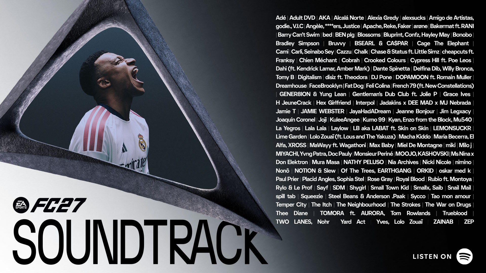

Quando o FIFA começou a ter sua própria identidade musical
Muito mais do que música de fundo
Quando a gente pensa em um jogo de futebol, é comum lembrar dos jogadores, dos estádios, dos uniformes
e das partidas. No caso do FIFA, porém, outro elemento acabou se tornando parte importante da
experiência: a música.
As trilhas sonoras começaram a ocupar um espaço cada vez maior dentro da franquia, principalmente por
reunirem artistas de diferentes estilos e países. Com o passar dos anos, algumas músicas ficaram
associadas diretamente à lembrança de determinadas versões do jogo.
Segundo a própria EA, a trilha sonora da franquia passou de uma
seleção de músicas que refletia diferentes culturas para algo que também passou a influenciar a forma
como os jogadores descobriam novos artistas.

As trilhas sonoras se tornaram uma das características marcantes da experiência de jogar FIFA.
A música como forma de descoberta
Artistas conhecidos e novos nomes
Uma das características das trilhas do FIFA era misturar artistas já conhecidos com músicos que
ainda
estavam começando a ganhar espaço internacionalmente.
Isso fez com que muitos jogadores entrassem em contato com estilos musicais e artistas que talvez
não
conhecessem fora do jogo. Rock, hip-hop, música eletrônica, pop, reggae e vários outros gêneros
apareceram ao longo da história da franquia.
Essa característica foi destacada por Steve Schnur, responsável pela área de música da EA, ao falar
sobre a evolução das trilhas sonoras:
"Originally, EA SPORTS FIFA soundtracks reflected world culture. Then they began to influence
culture. Today, the EA SPORTS FIFA soundtracks have become culture."
Tradução: "Originalmente, as trilhas sonoras do EA SPORTS FIFA refletiam a cultura mundial.
Depois, passaram a influenciar a cultura. Hoje, as trilhas do FIFA se tornaram cultura."
Steve Schnur, presidente de música da Electronic Arts, em comunicado sobre FIFA 20.
Algumas músicas ficaram muito associadas às versões em que
apareceram e ajudaram a construir a identidade das trilhas
sonoras da franquia.
Song 2 — Blur — FIFA 98
Jerk It Out — Caesars — FIFA 2004
Kids — MGMT — FIFA 09
Love Me Again — John Newman — FIFA 14
The Nights — Avicii — FIFA 15
FIFA 20: duas trilhas para experiências diferentes
O jogo foi ainda mais longe
FIFA 20 trouxe uma mudança importante na forma como a música era utilizada dentro do jogo. Pela
primeira vez na história da franquia, foram criadas duas trilhas sonoras diferentes.
A trilha principal acompanhava a experiência tradicional do FIFA, enquanto o modo VOLTA Football
recebeu uma seleção própria de músicas, combinando com a proposta mais voltada para o futebol de
rua.
Somando as duas seleções, FIFA 20 passou de
100 músicas, reunindo artistas de mais de 20 países.
Entre os artistas presentes estavam nomes como Skepta, Flume, Major Lazer, ROSALÍA, Ozuna, Foals,
Anderson .Paak e outros.
Mais de 100 músicas em uma das últimas edições da marca FIFA
A trilha sonora continuou crescendo nas versões mais recentes da franquia. FIFA 23, último jogo da
série com a marca FIFA, apresentou uma seleção com mais de 100 músicas.
O jogo reuniu artistas de diferentes partes do mundo e continuou apostando na mistura de estilos que
já havia se tornado uma característica da série.
Entre os artistas presentes estavam Stromae, Flume, Bad Bunny, Jack Harlow, ROSALÍA, M.I.A., Danger
Mouse e outros.
Dessa forma, a trilha sonora de FIFA 23 representava não apenas uma coleção de músicas, mas também a
continuidade de uma característica que acompanhou a franquia durante décadas.
A mudança de FIFA para EA SPORTS FC não encerrou a tradição das trilhas sonoras. Pelo contrário, a
música continuou sendo utilizada como uma das formas de representar a diversidade presente no
futebol.
EA SPORTS FC 24, o primeiro jogo após a mudança de nome, apresentou uma trilha com mais de 100
artistas
de diferentes partes do mundo, mantendo a proposta de misturar gêneros e estilos.
No EA SPORTS FC 25, a trilha sonora continuou seguindo essa ideia, reunindo mais de 100
músicas e artistas de diferentes países.
Com o passar dos anos, as músicas deixaram de ser apenas um acompanhamento para as partidas.
Elas
passaram a fazer parte da identidade da franquia e das lembranças de quem jogou diferentes
versões
do FIFA.
Mas a música era apenas uma parte da experiência. Além das trilhas sonoras, a franquia também
ficou
conhecida pela quantidade de modos de jogo disponíveis, oferecendo diferentes formas de jogar
futebol.
É sobre esses modos que vamos falar na próxima página.